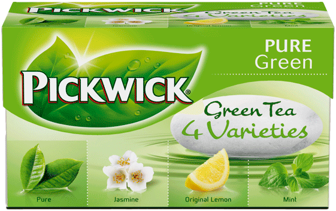
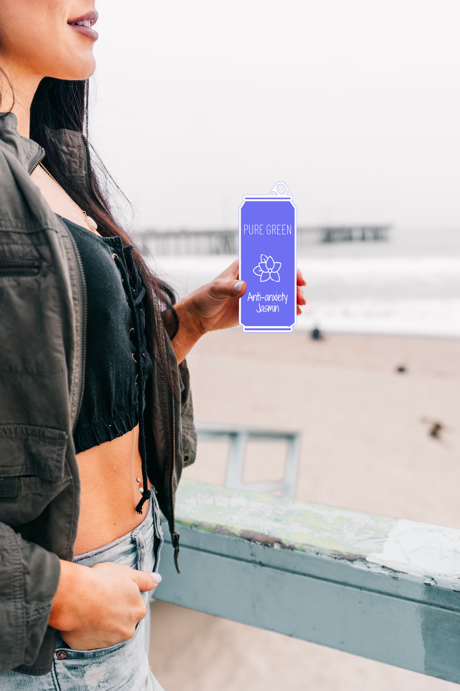

Pickwick is a brand with an impressive history.
Since 1753, Pickwick has been a strong international brand.
A brand full of flavor, which offers pure and natural products
that can be enjoyed at any time of the day. Millions of people
around the world drink one of the various and tasty Pickwick
tea blends daily.
PICKWICK'S HISTORY
Douwe Egberts has since 1753 gathered a lot of experience about
creating different tea blends. 1753 was the year that Egbert Douwe
opened his first small shop in the Netherlands. Here he sold
coffee, tea and tobacco. Until April 1937, all tea was marketed
under the Douwe Egberts trademark. At that time, customers were
given a tea box on which was a drawing of an English mail van.
This packaging proved to be very popular and inspired to find an
English-sounding brand name for Douwe Egbert's tea.
The director of Douwe Egberts at the time had a wife who was as fond of
tea as she was of Charles Dickens' books. Inspired by his short story
"Pickwick Papers", she suggested the name "Pickwick". Since then,
Douwe Egbert's tea has been marketed under this brand name.

2021: THE BIRTH OF PURE GREEN
With the popularity of Pickwick growing, 2021 saw the creation of a
brand new range of drinks: PURE GREEN ice tea. It's like an energy
drink - only healthier. We select 100% natural ingredients and mix
them together to create unique tastes that compliment our fine green
tea to bring you a world of flavour, all while boosting your energy!

SUSTAINABILITY
Tea is a global beverage. Millions of people around the world are
involved in the cultivation and production of tea. We therefore
believe that the tea industry bears a great ethical responsibility and
through Douwe Egbert's Master Blenders (DEMB) we have committed ourselves
to sustainable purchase of tea.
We do this through our membership of The Ethical Tea Partnership (ETP). The membership
is in line with our efforts to contribute to long-term sustainability in the tea area and
it is also a logical step towards our ambition to constantly contribute to sustainable
business practices and compliance with high, ethical standards.
ETP works to monitor the conditions for tea production worldwide to ensure that tea
plantations comply with the home countries' relevant laws and trade union agreements
regarding employment (including minimum age and wage level), education, maternity, etc.
ETP strives to work closely with tea producers and other stakeholders to promote an open
dialogue to ensure adequate living and working conditions for the workers in the tea
plantations and to strive for improvements where necessary. You can read more about ETP
and their work by clicking below.